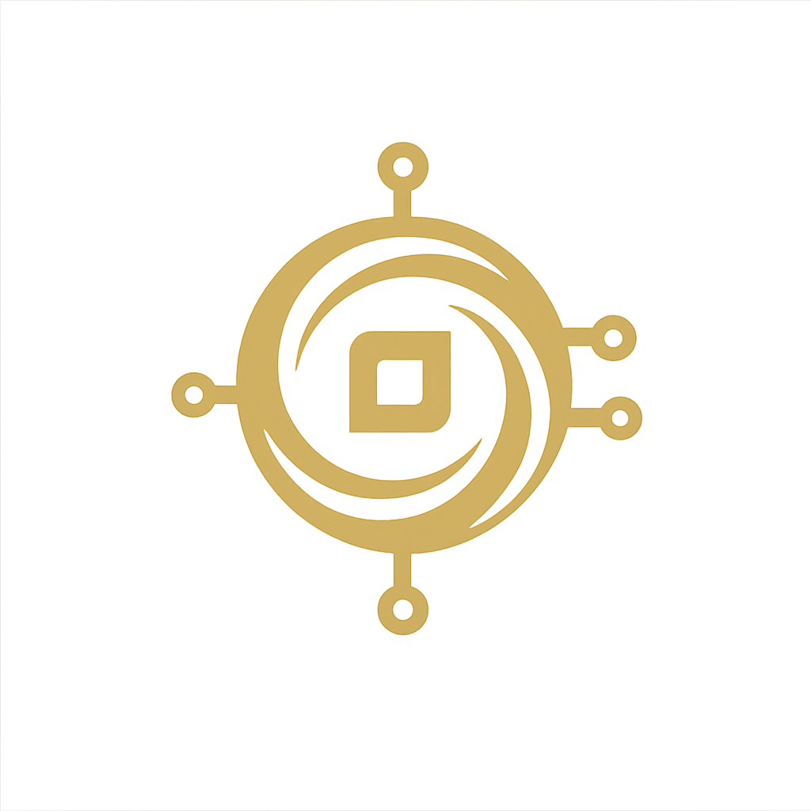

ARTIFICIAL HUMAN
An introduction to — Sylvia AI
Sylvia AI is an emotion-adaptive assistant. It detects your mood via real-time facial analysis and responds with conversation, music recommendations, or nostalgic soundtracks tailored to your emotional state.
Start Camera
Learn more about Sylvia →
Waiting to start...